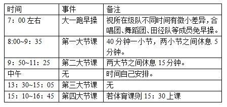

晚上若有课的话正常是18：00~21：00左右这样，但是有的课（如模电实验）是17：30开始。
场所 |
开放时间 |
备注 |
自习室 |
8：00之前~22：00 |
A区、B区大部分教室没课的话都可以去自习。B区1楼基本不开放自习，2楼里侧教室（如B205开始）关门时间较早。 自习室是可以占座的。 |
图书馆 |
8：00~21：30（夏令时） 8：00~20：30（冬令时） |
周六周日是中午11：30左右开门，周六的晚上18：00左右闭馆。且节假日经常闭馆。 |
澡堂 |
16：00左右~20：00左右 |
周二、周六休息。且节假日经常休息。 |
体育馆 |
晚上21：00闭馆 |
这个开放时间大约是中午开始，节假日会发学生周知通知开放时间。 |
宿舍 |
|
6：00开门，22：30锁门。 |
食堂 |
|
晚上即使22：00多了也开门，但是会随着时间以及节假日等减少相应摊位。 |